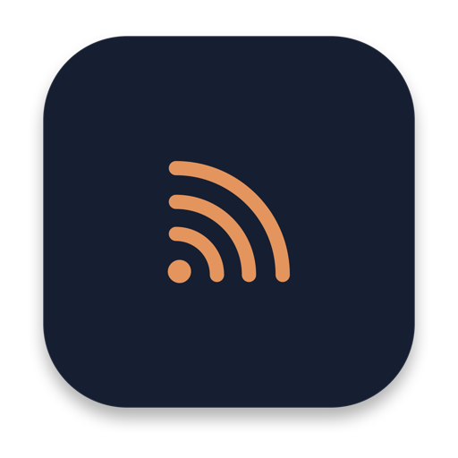

Akışlar ve kaynaklar
RSS 2.0 ve Atom, YouTube kanalları ve oynatma listeleri, Reddit toplulukları ve kullanıcıları. Bir site adresi yapıştırın, akışı Versoline bulur. OPML içe ve dışa aktarma klasörlerinizi korur.

Versoline; RSS ve Atom akışlarınızı, podcast'lerinizi, YouTube kanallarınızı ve Reddit topluluklarınızı tek bir Mac uygulamasında toplar. Swift ve SwiftUI ile yazıldı, yalnızca Apple'ın çerçevelerini kullanır ve verilerinizi Mac'inizde tutar.
Akışlarınız, makaleleriniz, podcast'leriniz ve videolarınız tek pencerede; merkezde okuma var.
RSS 2.0 ve Atom, YouTube kanalları ve oynatma listeleri, Reddit toplulukları ve kullanıcıları. Bir site adresi yapıştırın, akışı Versoline bulur. OPML içe ve dışa aktarma klasörlerinizi korur.
Makaleler yerel SwiftUI metniyle dizilir: başlıklar, listeler, alıntılar, kod, tablolar ve altyazılı görseller. Menüler, paylaşım çubukları ve reklamlar dışarıda kalır; özgün sayfa tek tıkla açılır.
Birkaç akışınız aynı haberi verdiğinde liste, kaynak sayısıyla tek satır gösterir. Öne Çıkanlar, en az üç akışın konuştuğu haberleri toplar. Gruplama Mac'inizde yapılır, istemezseniz kapatabilirsiniz.
Sistem, serif, sans-serif ve eş aralıklı yazı tipleri, ayarlanabilir boyut ve satır aralığı, on renk paleti ve Bionic Reading.
Başka dildeki makaleler Apple'ın Translation çerçevesiyle çevrilir, metin Mac'inizde kalır.
Makalede bul, paragraflara vurgu ve not. Uzun yazılarda nerede kaldığınızı Versoline hatırlar. İsterseniz yer imleriniz Spotlight'ta da çıkar.
Apple Podcasts dizininde arayın, bölümleri dinleyin ya da indirin; kuyruk, uyku zamanlayıcısı ve 0,75x–2x hız hazır. Videolar gömülü oynatıcıda ya da tarayıcınızda açılır.
Yeni makaleleri otomatik okundu yapın, yer imine ekleyin ya da görmek istemediğiniz konuları gizleyin. Akış Sağlığı, hata veren ya da sessizleşen akışları gösterir.
Tüm kütüphaneyi tek dosya olarak yedekleyin. İsterseniz kendi Mac'lerinizi bir kodla eşleştirip yerel ağ üzerinden senkronlayabilirsiniz; arada sunucu yok.
Hangi gün kaç makale geldiğini ve hangi günlerde yer imi olduğunu gösteren bir ay görünümü. Bir gün seçin, o gün gelenleri ya da yalnızca kaydettiklerinizi görün.
Okunmamış sayısı ve en yeni başlıklar masaüstünüzde, öne çıkanlar önce, üç boyutta. Uygulamanın renklerini izler ya da on paletten birini seçersiniz; ağ kullanmaz.
Arayüz iki dilde de var. Ayarlardan birini seçin ya da sistemi izleyin.
Versoline'da hesap, analiz ve çökme raporlama yok. Sakladığı her şey ~/Library/Application Support/Versoline altında durur. Ağ istekleri doğrudan Mac'inizden çıkar ve her birinin bir nedeni vardır. Bu klasörün dışında tutulan tek veri widget'ın özetidir: okunmamış sayısı ve birkaç başlık içeren tek küçük bir dosya, uygulama grubu klasöründe.
| İstek | Kime | Ne zaman |
|---|---|---|
| Akış güncellemeleri | Takip ettiğiniz sitelerin kendisi | Yenilerken |
| Makale sayfaları | Makalenin sitesi | Açtığınızda |
| Site simgeleri | Sitenin kendisi | Akış gösterilirken |
| Makale görselleri, YouTube küçük resimleri | Yayıncıları | Gösterilirken |
| Podcast araması | Apple iTunes Search API | Arama yaptığınızda |
| Seçilmiş akış kataloğu | Projenin GitHub deposu | Akış Ekle açıldığında |
| Çeviri dil paketleri | Apple, macOS aracılığıyla | Bir dil çiftinin ilk kullanımında |
Haber gruplama, çeviri, Spotlight dizinleme, vurgular ve notlar Mac'inizde olur. Uygulamanın üçüncü taraf bağımlılığı yok; kaynak kod açık, bunların hepsini kendiniz de kontrol edebilirsiniz.
Homebrew ile:
brew install --cask bezelye404/versoline/versolineCask karantina bayrağını temizler, bu yüzden aşağıdaki ilk açılış notu geçerli olmaz. Ya da elle indirin:
.dmg dosyasını indirin.Versoline, ücretli bir Apple Developer sertifikası olmadan ad hoc imzalıdır; bu yüzden macOS ilk açılışta geliştiriciyi doğrulayamadığını söyleyebilir. Uygulamaya sağ tıklayıp Aç'ı seçin ya da şunu çalıştırın:
xattr -cr /Applications/Versoline.appUygulamayı eski adıyla, easyRSS olarak kullandıysanız Versoline ilk açılışta o verileri alır, eski klasöre dokunmaz.
macOS 15 veya üzeri, Xcode 16 veya üzeri ve XcodeGen gerekir.
git clone https://github.com/bezelye404/Versoline.git
cd Versoline
xcodegen generate
xcodebuild -project Versoline.xcodeproj \
-scheme Versoline -configuration Release buildVerso, açık bir kitabın çevirdiğiniz sol sayfasıdır. Line ise haber akışı ve okuduğunuz satırlardır. Versoline, akış okumak için yazılmış bağımsız ve açık kaynaklı bir Mac uygulamasıdır. 0.3 sürümüne kadar easyRSS adını taşıyordu ve benzer adlı şirket ya da ürünlerle bağlantısı yoktur.
Versoline, Swift ve SwiftUI ile yazılmış, Mac için ücretsiz ve açık kaynaklı bir RSS okuyucu ve podcast oynatıcıdır. Önceki adı easyRSS'tir.
Hesap gerekmez. Akışları ve makaleleri almak için ağa bağlanır, ama daha önce yüklediğiniz makaleler ve indirdiğiniz bölümler çevrimdışı da açılır.
~/Library/Application Support/Versoline altında. Taşımak için Dosya > Yedeği Dışa Aktar ve Yedeği Geri Yükle'yi kullanın, aboneliklerinizi OPML olarak dışa aktarın ya da kendi Mac'leriniz arasında yakındaki senkronu açın.
O uygulamadan bir OPML dosyası dışa aktarın, sonra Versoline'da Dosya > OPML İçe Aktar'ı seçin ya da dosyayı doğrudan Versoline ile açın.
Çoğunlukla evet. Site adresini Akış Ekle'ye yapıştırın. Site bir akış duyuruyorsa ya da yaygın bir akış yolu kullanıyorsa Versoline bulur.
İngilizce ve Türkçe. Dil, Ayarlar > Genel bölümünden seçilebilir.
Versoline'ı bir kez açın, sonra masaüstüne sağ tıklayıp Widget'ları Düzenle'yi seçin ve Versoline'ı bulun. Uygulamanın en son yazdığını gösterir; uygulama kapalıyken olduğu gibi kalır.
Evet: brew install --cask bezelye404/versoline/versoline. Güncellemek için brew upgrade --cask versoline.
Evet, hep de öyle kalacak. MIT lisansıyla yayınlanıyor, kaynak kodu GitHub'da.